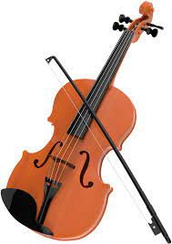
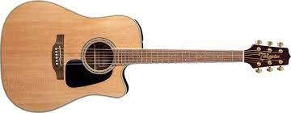

The flute is a family of musical instruments in the woodwind group. Unlike woodwind instruments with reeds, a flute is an aerophone or reedless wind instrument that produces its sound from the flow of air across an opening.Flutes dated back to 35,000 years ago have been found in Germany, making the flute one of the oldest instruments in the world

violin
The violin is the smallest and highest-pitched of the instruments in the string family. It is related to a North African instrument called a rebab.Violins have been traditionally used as an accompaniment to singing and dancing.The word violin comes from the Middle Latin word vitula. It means stringed instrument.The violin was first made in the early 16th century, in Italy.

guitar
The English word "guitar" comes from the Spanish word guitarra. Prior to that, it likely was formed from the Latin word "cithara" and an ancient Sanskrit "tar", which meant string. The oldest surviving guitar-like instrument comes from Ancient Egypt.Later it showed up in Spain from the Moors who brought the Oud.